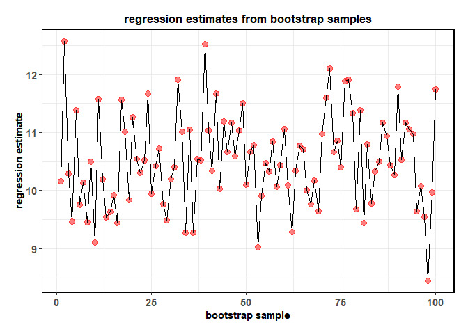
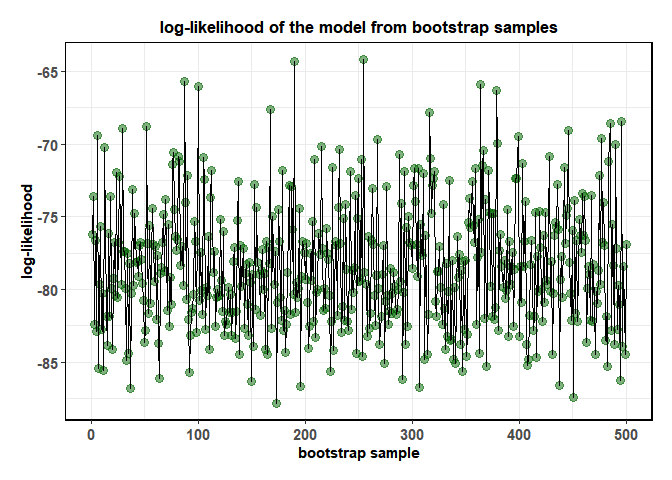

[
[
The goal of broomExtra is to provide helper functions that assist in data analysis workflows involving packages broom and broom.mixed.
Installation
To get the latest, stable CRAN release (0.0.4):
You can get the development version of the package from GitHub (0.0.4.9000). To see what new changes (and bug fixes) have been made to the package since the last release on CRAN, you can check the detailed log of changes here: https://indrajeetpatil.github.io/broomExtra/news/index.html
If you are in hurry and want to reduce the time of installation, prefer-
# needed package to download from GitHub repo
utils::install.packages(pkgs = "remotes")
remotes::install_github(
repo = "IndrajeetPatil/broomExtra", # package path on GitHub
quick = TRUE # skips docs, demos, and vignettes
)If time is not a constraint-
generic functions
Currently, S3 methods for mixed-effects model objects are included in the broom.mixed package, while the rest of the object classes are included in the broom package. This means that you constantly need to keep track of the class of the object (e.g., “if it is merMod object, use broom.mixed::tidy()/broom.mixed::glance()/broom.mixed::augment(), but if it is polr object, use broom::tidy()/broom::glance()/broom::augment()”). Using generics from broomExtra means you no longer have to worry about this, as calling broomExtra::tidy()/broomExtra::glance()/broomExtra::augment() will search the appropriate method from these two packages and return the results.
tidy dataframe
Let’s get a tidy tibble back containing results from various regression models.
set.seed(123)
library(lme4)
#> Loading required package: Matrix
library(ordinal)
#>
#> Attaching package: 'ordinal'
#> The following objects are masked from 'package:lme4':
#>
#> ranef, VarCorr
# mixed-effects models (`broom.mixed` will be used)
lmm.mod <- lmer(Reaction ~ Days + (Days | Subject), sleepstudy)
broomExtra::tidy(x = lmm.mod, effects = "fixed")
#> Registered S3 method overwritten by 'broom.mixed':
#> method from
#> tidy.gamlss broom
#> # A tibble: 2 x 5
#> effect term estimate std.error statistic
#> <chr> <chr> <dbl> <dbl> <dbl>
#> 1 fixed (Intercept) 251. 6.82 36.8
#> 2 fixed Days 10.5 1.55 6.77
# linear model (`broom` will be used)
lm.mod <- lm(Reaction ~ Days, sleepstudy)
broomExtra::tidy(x = lm.mod, conf.int = TRUE)
#> # A tibble: 2 x 7
#> term estimate std.error statistic p.value conf.low conf.high
#> <chr> <dbl> <dbl> <dbl> <dbl> <dbl> <dbl>
#> 1 (Intercept) 251. 6.61 38.0 2.16e-87 238. 264.
#> 2 Days 10.5 1.24 8.45 9.89e-15 8.02 12.9
# another example with `broom`
# cumulative Link Models
clm.mod <- clm(rating ~ temp * contact, data = wine)
broomExtra::tidy(
x = clm.mod,
exponentiate = TRUE,
conf.int = TRUE,
conf.type = "Wald"
)
#> # A tibble: 7 x 8
#> term estimate std.error statistic p.value conf.low conf.high coef.type
#> <chr> <dbl> <dbl> <dbl> <dbl> <dbl> <dbl> <chr>
#> 1 1|2 0.244 0.545 -2.59 9.66e- 3 0.0837 0.710 intercept
#> 2 2|3 3.14 0.510 2.24 2.48e- 2 1.16 8.52 intercept
#> 3 3|4 29.3 0.638 5.29 1.21e- 7 8.38 102. intercept
#> 4 4|5 140. 0.751 6.58 4.66e-11 32.1 610. intercept
#> 5 tempw~ 10.2 0.701 3.31 9.28e- 4 2.58 40.2 location
#> 6 conta~ 3.85 0.660 2.04 4.13e- 2 1.05 14.0 location
#> 7 tempw~ 1.43 0.924 0.389 6.97e- 1 0.234 8.76 location
# unsupported object (the function will return `NULL` in such cases)
x <- c(2, 2:4, 4, 4, 5, 5, 7, 7, 7)
y <- c(1:6, 5:4, 3:1)
appr <- stats::approx(x, y, xout = x)
#> Warning in regularize.values(x, y, ties, missing(ties)): collapsing to
#> unique 'x' values
broomExtra::tidy(appr)
#> NULLmodel summaries
Getting a tibble containing model summary and other performance measures.
set.seed(123)
library(lme4)
library(ordinal)
# mixed-effects model
lmm.mod <- lmer(Reaction ~ Days + (Days | Subject), sleepstudy)
broomExtra::glance(lmm.mod)
#> # A tibble: 1 x 6
#> sigma logLik AIC BIC REMLcrit df.residual
#> <dbl> <dbl> <dbl> <dbl> <dbl> <int>
#> 1 25.6 -872. 1756. 1775. 1744. 174
# linear model
lm.mod <- lm(Reaction ~ Days, sleepstudy)
broomExtra::glance(lm.mod)
#> # A tibble: 1 x 12
#> r.squared adj.r.squared sigma statistic p.value df logLik AIC BIC
#> <dbl> <dbl> <dbl> <dbl> <dbl> <dbl> <dbl> <dbl> <dbl>
#> 1 0.286 0.282 47.7 71.5 9.89e-15 1 -950. 1906. 1916.
#> # ... with 3 more variables: deviance <dbl>, df.residual <int>, nobs <int>
# another example with `broom`
# cumulative Link Models
clm.mod <- clm(rating ~ temp * contact, data = wine)
broomExtra::glance(clm.mod)
#> # A tibble: 1 x 6
#> edf AIC BIC logLik df.residual nobs
#> <int> <dbl> <dbl> <dbl> <dbl> <dbl>
#> 1 7 187. 203. -86.4 65 72
# in case no glance method is available (`NULL` will be returned)
broomExtra::glance(stats::anova(stats::lm(wt ~ am, mtcars)))
#> NULLaugmented dataframe
Getting a tibble by augmenting data with information from an object.
set.seed(123)
library(lme4)
library(ordinal)
# mixed-effects model
lmm.mod <- lmer(Reaction ~ Days + (Days | Subject), sleepstudy)
broomExtra::augment(lmm.mod)
#> # A tibble: 180 x 14
#> Reaction Days Subject .fitted .resid .hat .cooksd .fixed .mu
#> <dbl> <dbl> <fct> <dbl> <dbl> <dbl> <dbl> <dbl> <dbl>
#> 1 250. 0 308 254. -4.10 0.229 0.00496 251. 254.
#> 2 259. 1 308 273. -14.6 0.170 0.0402 262. 273.
#> 3 251. 2 308 293. -42.2 0.127 0.226 272. 293.
#> 4 321. 3 308 313. 8.78 0.101 0.00731 283. 313.
#> 5 357. 4 308 332. 24.5 0.0910 0.0506 293. 332.
#> 6 415. 5 308 352. 62.7 0.0981 0.362 304. 352.
#> 7 382. 6 308 372. 10.5 0.122 0.0134 314. 372.
#> 8 290. 7 308 391. -101. 0.162 1.81 325. 391.
#> 9 431. 8 308 411. 19.6 0.219 0.106 335. 411.
#> 10 466. 9 308 431. 35.7 0.293 0.571 346. 431.
#> # ... with 170 more rows, and 5 more variables: .offset <dbl>,
#> # .sqrtXwt <dbl>, .sqrtrwt <dbl>, .weights <dbl>, .wtres <dbl>
# linear model
lm.mod <- lm(Reaction ~ Days, sleepstudy)
broomExtra::augment(lm.mod)
#> # A tibble: 180 x 8
#> Reaction Days .fitted .resid .std.resid .hat .sigma .cooksd
#> <dbl> <dbl> <dbl> <dbl> <dbl> <dbl> <dbl> <dbl>
#> 1 250. 0 251. 1.85 -0.0390 0.0192 47.8 0.0000149
#> 2 259. 1 262. 3.17 -0.0669 0.0138 47.8 0.0000313
#> 3 251. 2 272. 21.5 -0.454 0.00976 47.8 0.00101
#> 4 321. 3 283. -38.6 0.813 0.00707 47.8 0.00235
#> 5 357. 4 293. -63.6 1.34 0.00572 47.6 0.00514
#> 6 415. 5 304. -111. 2.33 0.00572 47.1 0.0157
#> 7 382. 6 314. -68.0 1.43 0.00707 47.6 0.00728
#> 8 290. 7 325. 34.5 -0.727 0.00976 47.8 0.00261
#> 9 431. 8 335. -95.4 2.01 0.0138 47.3 0.0284
#> 10 466. 9 346. -121. 2.56 0.0192 47.0 0.0639
#> # ... with 170 more rows
# another example with `broom`
# cumulative Link Models
clm.mod <- clm(rating ~ temp * contact, data = wine)
broomExtra::augment(x = clm.mod, newdata = wine, type.predict = "prob")
#> # A tibble: 72 x 7
#> response rating temp contact bottle judge .fitted
#> <dbl> <ord> <fct> <fct> <fct> <fct> <dbl>
#> 1 36 2 cold no 1 1 0.562
#> 2 48 3 cold no 2 1 0.209
#> 3 47 3 cold yes 3 1 0.435
#> 4 67 4 cold yes 4 1 0.0894
#> 5 77 4 warm no 5 1 0.190
#> 6 60 4 warm no 6 1 0.190
#> 7 83 5 warm yes 7 1 0.286
#> 8 90 5 warm yes 8 1 0.286
#> 9 17 1 cold no 1 2 0.196
#> 10 22 2 cold no 2 2 0.562
#> # ... with 62 more rows
# in case no augment method is available (`NULL` will be returned)
broomExtra::augment(stats::anova(stats::lm(wt ~ am, mtcars)))
#> NULL
grouped_ variants of generics
grouped variants of the generic functions (tidy, glance, and augment) make it easy to execute the same analysis for all combinations of grouping variable(s) in a dataframe. Currently, these functions work only for methods that depend on a data argument (e.g., stats::lm), but not for functions that don’t (e.g., stats::prop.test()).
grouped_tidy
# to speed up computation, let's use only 50% of the data
set.seed(123)
library(lme4)
library(ggplot2)
# linear model (tidy analysis across grouping combinations)
broomExtra::grouped_tidy(
data = dplyr::sample_frac(tbl = ggplot2::diamonds, size = 0.5),
grouping.vars = c(cut, color),
formula = price ~ carat - 1,
..f = stats::lm,
na.action = na.omit,
tidy.args = list(quick = TRUE)
)
#> # A tibble: 35 x 7
#> cut color term estimate std.error statistic p.value
#> <ord> <ord> <chr> <dbl> <dbl> <dbl> <dbl>
#> 1 Fair D carat 5246. 207. 25.3 4.45e- 41
#> 2 Fair E carat 4202. 158. 26.6 3.52e- 47
#> 3 Fair F carat 4877. 149. 32.7 1.68e- 71
#> 4 Fair G carat 4538. 152. 29.8 1.03e- 66
#> 5 Fair H carat 4620. 146. 31.6 7.68e- 66
#> 6 Fair I carat 3969. 136. 29.2 4.86e- 44
#> 7 Fair J carat 4024. 197. 20.4 4.80e- 27
#> 8 Good D carat 5207. 115. 45.4 2.66e-145
#> 9 Good E carat 5102. 91.9 55.5 2.50e-206
#> 10 Good F carat 5151. 92.4 55.8 1.76e-204
#> # ... with 25 more rows
# linear mixed effects model (tidy analysis across grouping combinations)
broomExtra::grouped_tidy(
data = dplyr::sample_frac(tbl = ggplot2::diamonds, size = 0.5),
grouping.vars = cut,
..f = lme4::lmer,
formula = price ~ carat + (carat | color) - 1,
control = lme4::lmerControl(optimizer = "bobyqa"),
tidy.args = list(conf.int = TRUE, conf.level = 0.99)
)
#> # A tibble: 25 x 9
#> cut effect group term estimate std.error statistic conf.low conf.high
#> <ord> <chr> <chr> <chr> <dbl> <dbl> <dbl> <dbl> <dbl>
#> 1 Fair fixed <NA> carat 3800. 228. 16.7 3212. 4387.
#> 2 Fair ran_p~ color sd__~ 2158. NA NA NA NA
#> 3 Fair ran_p~ color cor_~ -0.975 NA NA NA NA
#> 4 Fair ran_p~ color sd__~ 2545. NA NA NA NA
#> 5 Fair ran_p~ Resi~ sd__~ 1830. NA NA NA NA
#> 6 Good fixed <NA> carat 9217. 105. 87.6 8946. 9488.
#> 7 Good ran_p~ color sd__~ 2686. NA NA NA NA
#> 8 Good ran_p~ color cor_~ 0.998 NA NA NA NA
#> 9 Good ran_p~ color sd__~ 1609. NA NA NA NA
#> 10 Good ran_p~ Resi~ sd__~ 1373. NA NA NA NA
#> # ... with 15 more rows
grouped_glance
# to speed up computation, let's use only 50% of the data
set.seed(123)
# linear model (model summaries across grouping combinations)
broomExtra::grouped_glance(
data = dplyr::sample_frac(tbl = ggplot2::diamonds, size = 0.5),
grouping.vars = c(cut, color),
formula = price ~ carat - 1,
..f = stats::lm,
na.action = na.omit
)
#> # A tibble: 35 x 14
#> cut color r.squared adj.r.squared sigma statistic p.value df
#> <ord> <ord> <dbl> <dbl> <dbl> <dbl> <dbl> <dbl>
#> 1 Fair D 0.884 0.883 1857. 641. 4.45e- 41 1
#> 2 Fair E 0.876 0.875 1370. 708. 3.52e- 47 1
#> 3 Fair F 0.874 0.873 1989. 1071. 1.68e- 71 1
#> 4 Fair G 0.849 0.848 2138. 887. 1.03e- 66 1
#> 5 Fair H 0.876 0.875 2412. 998. 7.68e- 66 1
#> 6 Fair I 0.915 0.914 1499. 850. 4.86e- 44 1
#> 7 Fair J 0.885 0.883 2189. 416. 4.80e- 27 1
#> 8 Good D 0.860 0.860 1729. 2065. 2.66e-145 1
#> 9 Good E 0.870 0.870 1674. 3084. 2.50e-206 1
#> 10 Good F 0.873 0.873 1677. 3110. 1.76e-204 1
#> # ... with 25 more rows, and 6 more variables: logLik <dbl>, AIC <dbl>,
#> # BIC <dbl>, deviance <dbl>, df.residual <int>, nobs <int>
# linear mixed effects model (model summaries across grouping combinations)
broomExtra::grouped_glance(
data = dplyr::sample_frac(tbl = ggplot2::diamonds, size = 0.5),
grouping.vars = cut,
..f = lme4::lmer,
formula = price ~ carat + (carat | color) - 1,
control = lme4::lmerControl(optimizer = "bobyqa")
)
#> # A tibble: 5 x 7
#> cut sigma logLik AIC BIC REMLcrit df.residual
#> <ord> <dbl> <dbl> <dbl> <dbl> <dbl> <int>
#> 1 Fair 1830. -7257. 14525. 14548. 14515. 806
#> 2 Good 1373. -21027. 42064. 42093. 42054. 2425
#> 3 Very Good 1362. -51577. 103165. 103198. 103155. 5964
#> 4 Premium 1557. -60736. 121482. 121516. 121472. 6917
#> 5 Ideal 1257. -92766. 185542. 185579. 185532. 10833
grouped_augment
# to speed up computation, let's use only 50% of the data
set.seed(123)
# linear model
broomExtra::grouped_augment(
data = ggplot2::diamonds,
grouping.vars = c(cut, color),
..f = stats::lm,
formula = price ~ carat - 1
)
#> # A tibble: 53,940 x 10
#> cut color price carat .fitted .resid .std.resid .hat .sigma .cooksd
#> <ord> <ord> <int> <dbl> <dbl> <dbl> <dbl> <dbl> <dbl> <dbl>
#> 1 Fair D 2848 0.75 3795. 947. -0.522 0.00342 1822. 9.33e-4
#> 2 Fair D 2858 0.71 3593. 735. -0.405 0.00306 1823. 5.03e-4
#> 3 Fair D 2885 0.9 4554. 1669. -0.920 0.00492 1819. 4.19e-3
#> 4 Fair D 2974 1 5060. 2086. -1.15 0.00607 1816. 8.09e-3
#> 5 Fair D 3003 1.01 5111. 2108. -1.16 0.00620 1816. 8.43e-3
#> 6 Fair D 3047 0.73 3694. 647. -0.356 0.00324 1823. 4.12e-4
#> 7 Fair D 3077 0.71 3593. 516. -0.284 0.00306 1823. 2.48e-4
#> 8 Fair D 3079 0.91 4605. 1526. -0.841 0.00503 1820. 3.58e-3
#> 9 Fair D 3205 0.9 4554. 1349. -0.744 0.00492 1821. 2.74e-3
#> 10 Fair D 3205 0.9 4554. 1349. -0.744 0.00492 1821. 2.74e-3
#> # ... with 53,930 more rows
# linear mixed-effects model
broomExtra::grouped_augment(
data = dplyr::sample_frac(tbl = ggplot2::diamonds, size = 0.5),
grouping.vars = cut,
..f = lme4::lmer,
formula = price ~ carat + (carat | color) - 1,
control = lme4::lmerControl(optimizer = "bobyqa")
)
#> boundary (singular) fit: see ?isSingular
#> # A tibble: 26,970 x 15
#> cut price carat color .fitted .resid .hat .cooksd .fixed .mu
#> <ord> <int> <dbl> <ord> <dbl> <dbl> <dbl> <dbl> <dbl> <dbl>
#> 1 Fair 8818 1.52 H 7001. 1817. 0.00806 8.37e-3 3519. 7001.
#> 2 Fair 1881 0.65 F 2104. -223. 0.00225 3.46e-5 1505. 2104.
#> 3 Fair 2376 1.2 G 5439. -3063. 0.00651 1.91e-2 2778. 5439.
#> 4 Fair 1323 0.5 D 1069. 254. 0.00281 5.65e-5 1158. 1069.
#> 5 Fair 3282 0.92 F 3935. -653. 0.00338 4.48e-4 2130. 3935.
#> 6 Fair 2500 0.7 H 2259. 241. 0.00219 3.96e-5 1621. 2259.
#> 7 Fair 13853 1.5 F 7868. 5985. 0.0149 1.70e-1 3473. 7868.
#> 8 Fair 3869 1.01 H 4052. -183. 0.00287 2.97e-5 2338. 4052.
#> 9 Fair 1811 0.7 H 2259. -448. 0.00219 1.37e-4 1621. 2259.
#> 10 Fair 2788 1.01 E 4406. -1618. 0.0135 1.12e-2 2338. 4406.
#> # ... with 26,960 more rows, and 5 more variables: .offset <dbl>,
#> # .sqrtXwt <dbl>, .sqrtrwt <dbl>, .weights <dbl>, .wtres <dbl>
boot_ variants of generics
boot variants of the generic functions (tidy, glance, and augment) make it easy to create a tidy dataframe of estimates from each of the bootstrap samples (created using rsample::bootstraps). Currently, these functions work only for methods that depend on a data argument (e.g., lme4::lmer), but not for functions that don’t (e.g., stats::chisq.test()).
boot_tidy
Let’s see an example with linear mixed-effects regression.
# setup
set.seed(123)
library(lme4)
library(ggplot2)
library(broomExtra)
# dataframe with estimates from each of the 25 bootstrap sample
(df_boot <- broomExtra::boot_tidy(
data = sleepstudy,
times = 100,
..f = lme4::lmer,
formula = Reaction ~ Days + (Days | Subject),
control = lme4::lmerControl(
check.conv.grad = .makeCC("ignore", tol = 2e-3, relTol = NULL),
check.conv.singular = .makeCC(action = "ignore", tol = 1e-4),
check.conv.hess = .makeCC(action = "ignore", tol = 1e-6)
),
tidy.args = list(effects = "fixed")
))
#> # A tibble: 200 x 8
#> splits id results effect term estimate std.error statistic
#> <list> <chr> <list> <chr> <chr> <dbl> <dbl> <dbl>
#> 1 <split [1~ Bootstr~ <tibble ~ fixed (Inte~ 251. 7.59 33.1
#> 2 <split [1~ Bootstr~ <tibble ~ fixed Days 10.2 1.68 6.04
#> 3 <split [1~ Bootstr~ <tibble ~ fixed (Inte~ 247. 8.93 27.7
#> 4 <split [1~ Bootstr~ <tibble ~ fixed Days 12.6 2.46 5.11
#> 5 <split [1~ Bootstr~ <tibble ~ fixed (Inte~ 254. 7.89 32.2
#> 6 <split [1~ Bootstr~ <tibble ~ fixed Days 10.3 1.72 6.00
#> 7 <split [1~ Bootstr~ <tibble ~ fixed (Inte~ 254. 5.78 44.0
#> 8 <split [1~ Bootstr~ <tibble ~ fixed Days 9.47 1.48 6.41
#> 9 <split [1~ Bootstr~ <tibble ~ fixed (Inte~ 246. 7.12 34.5
#> 10 <split [1~ Bootstr~ <tibble ~ fixed Days 11.4 1.66 6.88
#> # ... with 190 more rows
# plotting estimates from each bootstrapped sample
dplyr::filter(df_boot, term != "(Intercept)") %>%
tibble::rowid_to_column(.data = .) %>%
ggplot(data = ., aes(rowid, estimate)) +
geom_point(size = 3, alpha = 0.5, color = "red") + geom_line() +
ggstatsplot::theme_ggstatsplot() +
labs(
title = "regression estimates from bootstrap samples",
x = "bootstrap sample",
y = "regression estimate"
)
#> Registered S3 methods overwritten by 'car':
#> method from
#> influence.merMod lme4
#> cooks.distance.influence.merMod lme4
#> dfbeta.influence.merMod lme4
#> dfbetas.influence.merMod lme4
boot_glance
A similar function can also be used to extract model summaries from bootstrapped samples.
# setup
set.seed(123)
library(ggplot2)
# dataframe with model summaries from each of the 500 bootstrap samples
(df_glance <-
broomExtra::boot_glance(
data = mtcars,
times = 500,
..f = stats::lm,
formula = mpg ~ wt,
na.action = na.omit
)
)
#> # A tibble: 500 x 15
#> splits id results r.squared adj.r.squared sigma statistic p.value
#> <list> <chr> <list> <dbl> <dbl> <dbl> <dbl> <dbl>
#> 1 <spli~ Boot~ <tibbl~ 0.799 0.792 2.71 119. 5.63e-12
#> 2 <spli~ Boot~ <tibbl~ 0.726 0.717 2.49 79.6 6.06e-10
#> 3 <spli~ Boot~ <tibbl~ 0.754 0.746 3.29 92.1 1.18e-10
#> 4 <spli~ Boot~ <tibbl~ 0.731 0.722 2.74 81.7 4.59e-10
#> 5 <spli~ Boot~ <tibbl~ 0.700 0.690 3.33 69.9 2.49e- 9
#> 6 <spli~ Boot~ <tibbl~ 0.830 0.824 2.19 146. 4.70e-13
#> 7 <spli~ Boot~ <tibbl~ 0.768 0.761 3.61 99.5 4.87e-11
#> 8 <spli~ Boot~ <tibbl~ 0.550 0.535 3.01 36.6 1.20e- 6
#> 9 <spli~ Boot~ <tibbl~ 0.815 0.809 2.66 132. 1.57e-12
#> 10 <spli~ Boot~ <tibbl~ 0.680 0.670 3.32 63.8 6.43e- 9
#> # ... with 490 more rows, and 7 more variables: df <dbl>, logLik <dbl>,
#> # AIC <dbl>, BIC <dbl>, deviance <dbl>, df.residual <int>, nobs <int>
# plotting log-likelihood for the model for each of the samples
tibble::rowid_to_column(.data = df_glance) %>%
ggplot(data = ., aes(rowid, logLik)) +
geom_point(size = 3, alpha = 0.5, color = "darkgreen") + geom_line() +
ggstatsplot::theme_ggstatsplot() +
labs(
title = "log-likelihood of the model from bootstrap samples",
x = "bootstrap sample",
y = "log-likelihood"
)
boot_augment
# setup
set.seed(123)
library(ggplot2)
# dataframe with augmented data from each of the 100 bootstrap samples
(df_augment <-
broomExtra::boot_augment(
data = mtcars,
times = 500,
..f = stats::lm,
formula = mpg ~ wt,
na.action = na.omit,
augment.args = list(se_fit = TRUE)
)
)
#> # A tibble: 16,000 x 13
#> splits id results .rownames mpg wt .fitted .se.fit .resid
#> <list> <chr> <list> <chr> <dbl> <dbl> <dbl> <dbl> <dbl>
#> 1 <spli~ Boot~ <tibbl~ Maserati~ 15 3.57 18.0 0.579 2.96
#> 2 <spli~ Boot~ <tibbl~ Cadillac~ 10.4 5.25 7.71 1.35 -2.69
#> 3 <spli~ Boot~ <tibbl~ Honda Ci~ 30.4 1.62 29.9 0.902 -0.522
#> 4 <spli~ Boot~ <tibbl~ Merc 450~ 15.2 3.78 16.7 0.653 1.48
#> 5 <spli~ Boot~ <tibbl~ Datsun 7~ 22.8 2.32 25.6 0.605 2.78
#> 6 <spli~ Boot~ <tibbl~ Merc 280 19.2 3.44 18.8 0.542 -0.449
#> 7 <spli~ Boot~ <tibbl~ Fiat 128 32.4 2.2 26.3 0.649 -6.09
#> 8 <spli~ Boot~ <tibbl~ Dodge Ch~ 15.5 3.52 18.3 0.564 2.76
#> 9 <spli~ Boot~ <tibbl~ Merc 280C 17.8 3.44 18.8 0.542 0.951
#> 10 <spli~ Boot~ <tibbl~ Hornet S~ 18.7 3.44 18.8 0.542 0.0506
#> # ... with 15,990 more rows, and 4 more variables: .std.resid <dbl>,
#> # .hat <dbl>, .sigma <dbl>, .cooksd <dbl>
# plotting those estimates
dplyr::group_by(.data = df_augment, id) %>%
dplyr::summarise(.data = ., mean.resid = mean(.resid)) %>%
dplyr::ungroup(x = .) %>%
tibble::rowid_to_column(.data = .) %>% # creating a plot
ggplot(data = ., aes(rowid, mean.resid)) +
geom_point(size = 3, alpha = 0.5, color = "blue") +
geom_line(color = "black") +
geom_hline(aes(yintercept = 0),
color = "red",
size = 1,
linetype = "dashed") +
ggstatsplot::theme_ggstatsplot() +
labs(
title = "mean difference between fitted and observed values from bootstrap samples",
x = "bootstrap sample",
y = "residual score"
)
Code coverage
As the code stands right now, here is the code coverage for all primary functions involved: https://codecov.io/gh/IndrajeetPatil/broomExtra/tree/master/R
Contributing
I’m happy to receive bug reports, suggestions, questions, and (most of all) contributions to fix problems and add features. I personally prefer using the GitHub issues system over trying to reach out to me in other ways (personal e-mail, Twitter, etc.). Pull requests for contributions are encouraged.
Please note that this project is released with a Contributor Code of Conduct. By participating in this project you agree to abide by its terms.